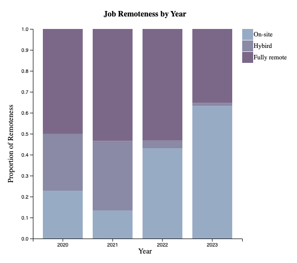
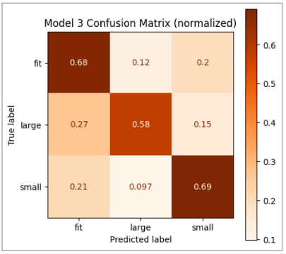
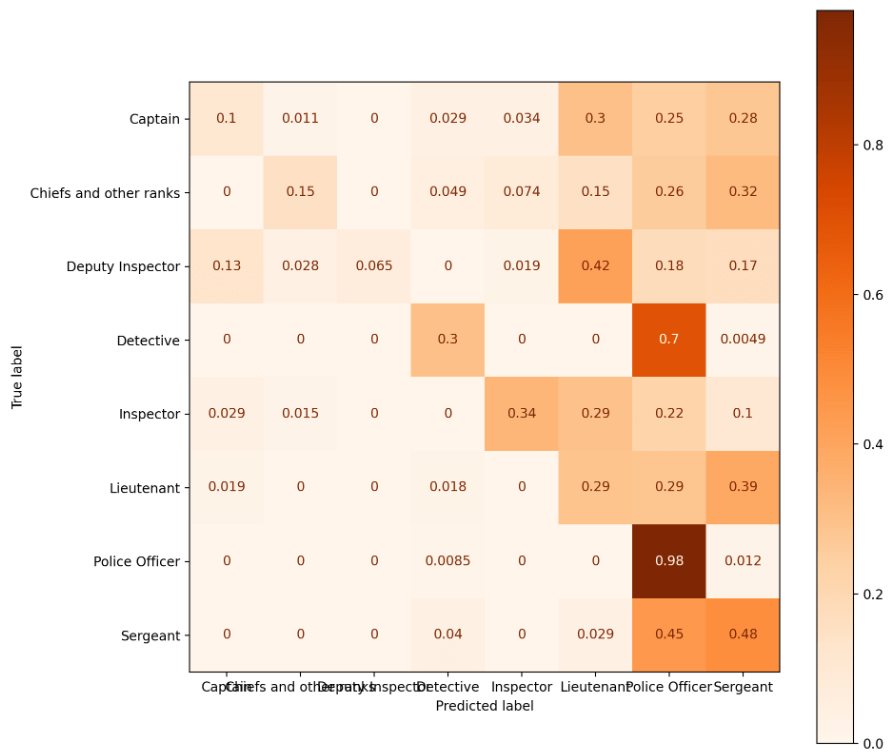

Status and Prospects of Data Science Careers
- Data visualization project focusing on data science job trends and salary growth.
- Target audience: individuals interested in data science careers, including data science students.
- Utilizes standard visualization techniques, follows Drill-Down narrative structure with overview and specific aspects.
- Visualizations cover remote work trends, salary growth with experience, geographic factors, and job categories.
View Project

Data Science Careers Insights
Predictive Analysis on Clothing Fit
- Developed a predictive model for clothing fit based on user measurements using Python.
- Conducted exploratory analysis to uncover insights on size distribution.
- Implemented baseline and enhanced models using scikit-learn and pandas, achieving high accuracy.
- Balanced the dataset to address class imbalance and improve model performance.
View Project

Confusion Matrix of Final Model of Size Fit Prediction
Rank Prediction of New York City Police Officers based on Civilian Complaints
- Developed a predictive model using DecisionTreeClassifier to rank
New York City police officers based on civilian complaints.
- Improved accuracy significantly from 0.13 to 0.34 through feature
engineering and model optimization.
- Conducted fairness analysis and performed a permutation test to
assess potential biases in the model's performance.
View Project

Confusion Matrix of Final Model of Rank Prediction